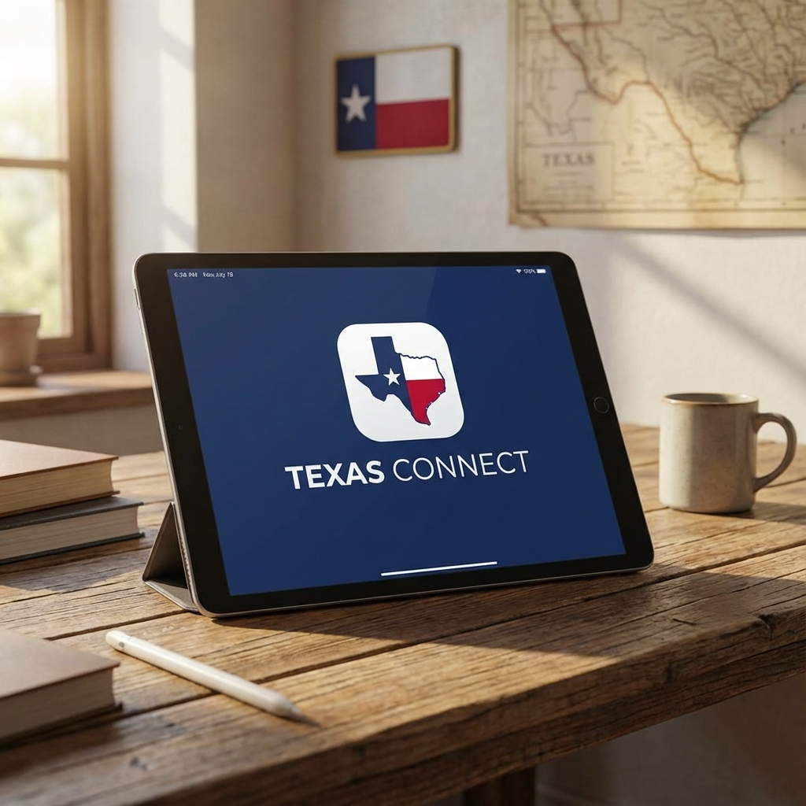

How to Apply for Texas Free Tablet Program
Texans eligible for SNAP, Medicaid, or other government assistance programs can now apply for a free tablet with internet service. Bridge the digital divide today.

Do You Qualify?
Most Texans who participate in federal assistance programs are already eligible.
Medicaid / SNAP
If you receive Medicaid or SNAP (Food Stamps) benefits, you likely qualify instantly for the Affordable Connectivity Program (ACP) device discount.
Pell Grant
Students who have received a Federal Pell Grant in the current award year are eligible to apply for a free or discounted tablet.
Income Based
If your household income is at or below 200% of the Federal Poverty Guidelines, you are eligible for this benefit.
Application Process
Gather Documents
Have your ID, proof of address in Texas, and proof of benefit participation (like a SNAP letter) ready.
Choose a Provider
Select a provider that services Texas, such as AirTalk, Q Link, or Excess Telecom, that offers tablet benefits.
Apply Online
Fill out the National Verifier form or apply directly through your chosen provider's website using the link below.
Pay Copay (If Any)
Some providers require a one-time co-pay (usually $10.01) as per government regulations to receive the device.
Don't Miss Out on This Opportunity
Connectivity is essential. Get your free tablet to stay connected with work, school, and family.
👉 CLICK HERE TO APPLY FOR YOUR FREE TEXAS TABLET 👈